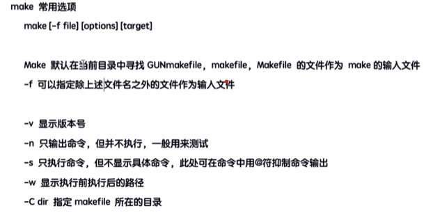

81 . Tap命令
a :
@echo "hello, world"
b :
@echo "what's up"
当使用make命令时，只输入make命令，会直接输出第一个指令a(这里a和b表示不同指令)；想指定指令b输出，可以使用make b来输出"what's up"；注意，所谓tap命令，是@(注意 ： Windows下@符没必要写)面前是一个tap键长度
2 . 依赖
所谓依赖，就是执行当前的命令所要依赖的先项，包括其他目标、具体文件、库等等等，一个目标可以有多个依赖，下示 :
a : b
@echo "hello, world"
b :
@echo "what's up"
c : d e
@echo "It's c"
d :
@echo "It's d"
e :
@echo "It's e"
上面代码说明了a命令是依赖b命令的,所以会先执行b命令，然后a命令；第二个命令c是依赖d和e的，所以会先执行d和e命令
3 . 命令
一个命令下可以有多个命令，也可以没有，比如
a :
@echo "hi"
@ls ./ # 注意，这个命令是Windows下的
@dir # 这个才是Windows下的
b :
4 . make常用命令
